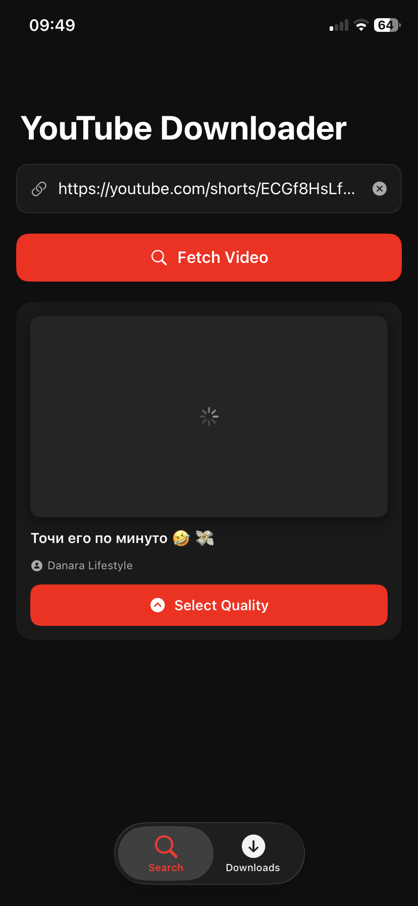
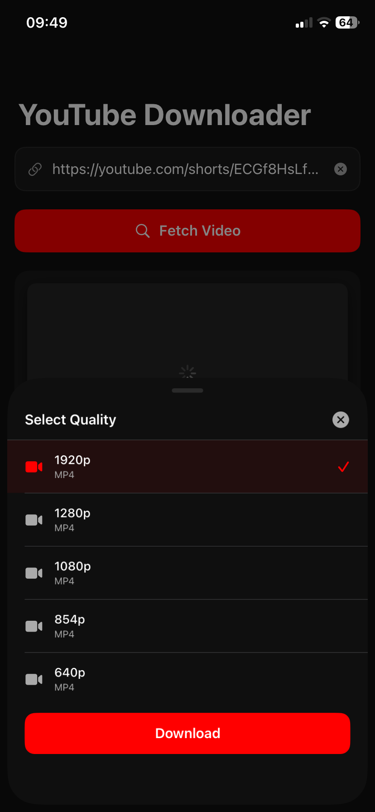
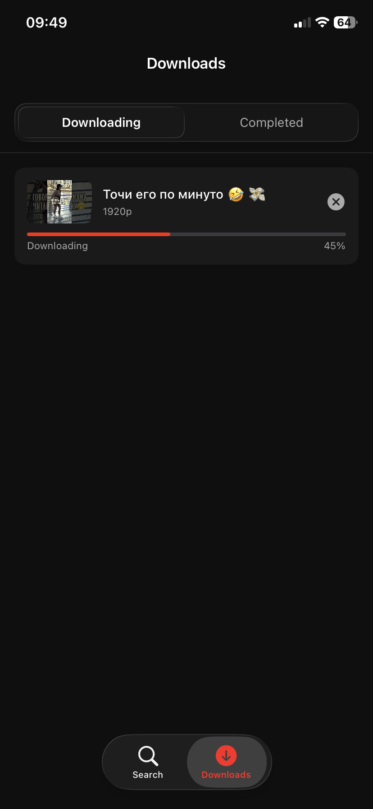
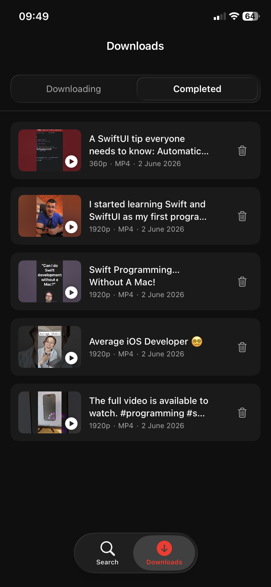
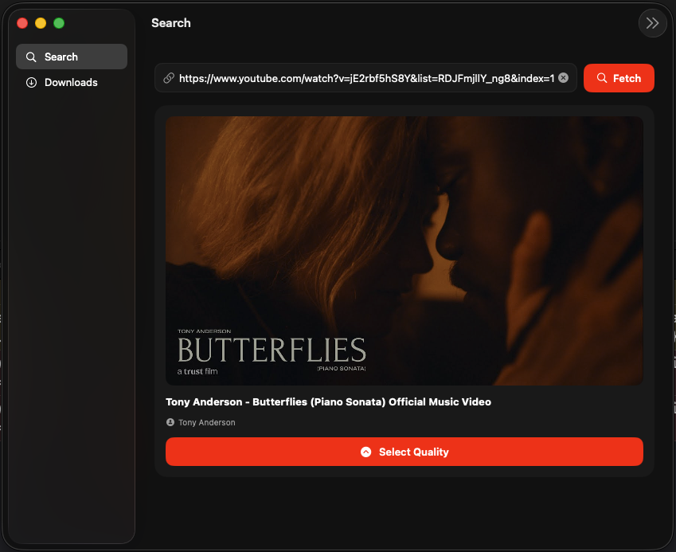
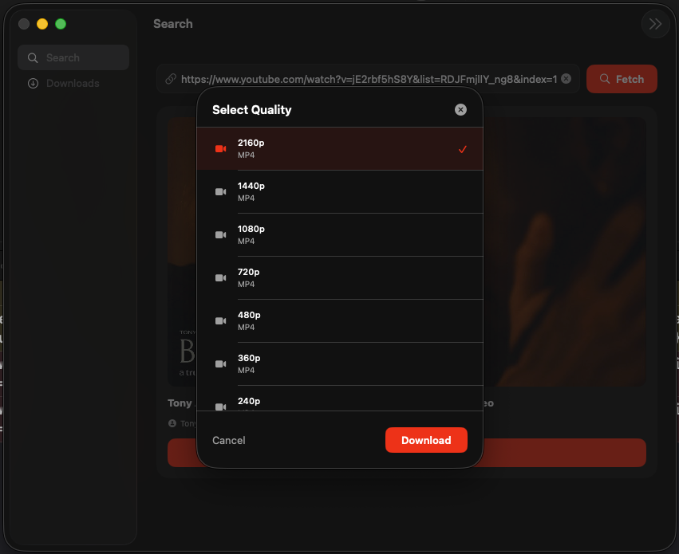
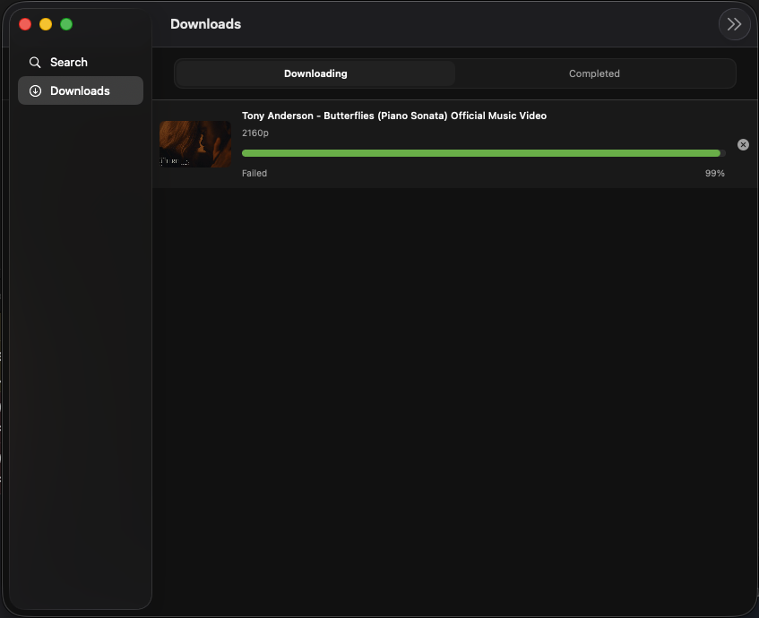
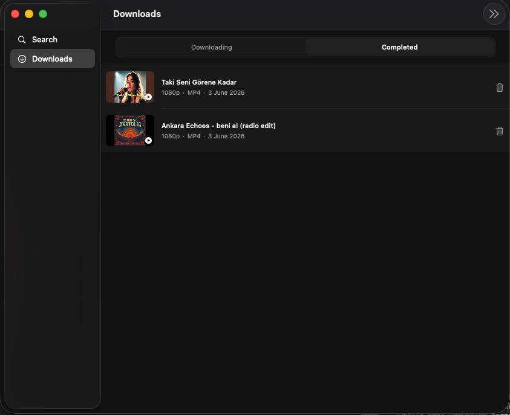

A native SwiftUI app for iPhone and Mac that fetches and downloads YouTube videos in any quality — up to 4K — backed by a Python API.
Paste a YouTube URL, pick a quality, and download. Works on both iPhone and Mac from a single SwiftUI codebase.
Paste any YouTube URL to instantly fetch the video title, thumbnail, channel name, and all available quality options.
Choose from all available resolutions — 360p up to 1920p and 4K — plus audio-only MP4. The Python backend merges separate video and audio streams via ffmpeg for full-quality downloads.
Live progress bar per download using AsyncThrowingStream. Multiple simultaneous downloads supported, each with an individual cancel button.
Downloads survive app restarts. Stored with SwiftData — titles, thumbnails (cached for offline), quality, file size, and download date all persist.
Tap any completed download to watch it in the built-in AVPlayer with custom controls — play/pause, seek bar, save to Photos, and double-tap to seek ±10s.
The iOS version uses the iOS 26 liquid glass visual style. One SwiftUI codebase with #if os(iOS) guards adapts the layout and navigation for both platforms.
A single SwiftUI target for both platforms, paired with a Python backend deployed to Hugging Face Spaces.
The app calls a self-hosted FastAPI backend which uses yt-dlp and ffmpeg to fetch and merge streams, then streams the file back to the device.
Real screenshots from the app running on iPhone and Mac.








Want to see the code?